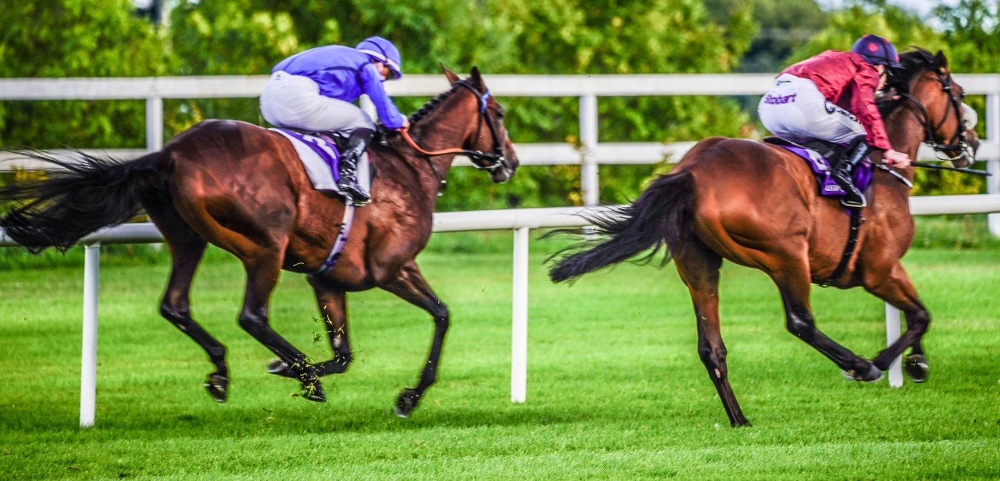

Paul Nicholls supera a Martin Pipe: 3.931 ganadores en National Hunt británico
Knappers Hill, con Sam Twiston-Davies, dio en Warwick el triunfo número 3.931 al preparador de Ditcheat, que deja atrás el récord de Martin Pipe en las carreras de obstáculos británicas.

Nicholls ya había igualado las 3.930 victorias de Pipe el sábado en Windsor. Bastaron cinco días para pasar por delante: el jueves, en Warwick, Knappers Hill aguantó el esfuerzo en la Denis O'Connell Memorial Veterans' Handicap Chase y se llevó la carrera con Sam Twiston-Davies a los mandos.
El ejemplar corrió con los colores de Paul Barber, amigo de largo recorrido y mentor del preparador. Nicholls trabaja en Manor Farm Stables, en la localidad de Ditcheat, en Somerset, desde el comienzo de su carrera como entrenador, cuando alquiló las instalaciones al propio Barber.
El preparador, 14 veces campeón, ha pasado por sus manos a Kauto Star, Denman, Big Buck's y Master Minded. Recordó su primera victoria: el 20 de diciembre de 1991 en Hereford.
«Nunca pensé cuando empecé a entrenar que llegaríamos a sacar tantos ganadores», dijo. «He tenido muchísima suerte. He tenido gente estupenda a mi alrededor y caballos fantásticos.» Sobre Barber añadió: «Fue una parte importante de mi vida, junto con mucha otra gente por el camino».
Nicholls habló también del tiempo: «Me pellizco al pensar que llevo aquí 35 años; parece que fue ayer». Y del récord: «Es agradable ser el preparador con más victorias en National Hunt en Gran Bretaña, aunque no sea para siempre. Los récords están para batirlos. Habríais pensado que a Martin nunca lo superarían, qué gran preparador fue».
La próxima cifra redonda es la de los 4.000 ganadores. «No estamos lejos de los 4.000 enviados a correr en todas las modalidades», señaló. «Ojalá podamos seguir con los ganadores británicos y acercarnos a esa cifra; es emocionante».
Por Martín Larrañeta